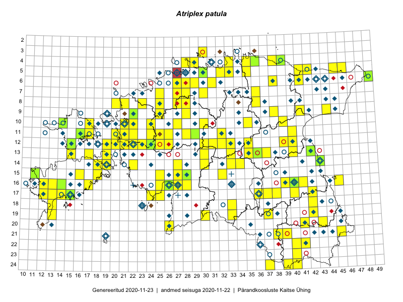

Atriplex patula
Uuendatud: 2016-12-02
Kaardile koondatud taksonid: Atriplex patula L.

Kaart põhineb 102 kirjel, neist vaatlusi 99 ja eksemplare 3. Taksonit on leitud 97 ruudust.
Kuvatud viited 20 esimesele andmebaasikirjele, ülejäänud PlutoFis
- Toomas Kukk, Eerik Leibak: 2015-08-10: 13-15: ala
- Tiit Hallikma, Toomas Kukk: 2015-07-21: 05-45: ala
- Ott Luuk: 2014-07-27: 12-20: GPS punkt
- Ott Luuk: 2014-07-25: 12-19: GPS punkt
- Peedu Saar, Ott Luuk: 2015-07-27: 10-35: ala
- Toomas Kukk, Eerik Leibak: 2015-07-29: 16-45: ala
- Toomas Kukk, Tiit Hallikma: 2015-07-24: 06-41: ala
- Peedu Saar, Eerik Leibak: 2015-08-16: 12-40: ala
- Peedu Saar, Eerik Leibak: 2015-08-16: 12-39: ala
- Tiit Hallikma, Toomas Kukk: 2015-08-27: 12-21: ala
- Tiit Hallikma, Toomas Kukk: 2015-08-24: 12-24: ala
- Ott Luuk, Hannes Pehlak: 2015-07-24: 09-44: ala
- Indrek Tammekänd: 2015-09-18: 16-25: GPS punkt
- Indrek Tammekänd, Ly Tammekänd: 2015-07-06: 17-24: ala
- Eeva-Maria Jeletsky, Tarmo Niitla: 2015-06-22: 11-16: ala
- Ott Luuk, Peedu Saar: 2015-08-24: 12-22: ala
- Eeva-Maria Jeletsky, Tarmo Niitla: 2015-07-26: 21-39: ala
- Oliver Parrest: 2015-07-01: 19-13: ala
- Eeva-Maria Jeletsky, Tarmo Niitla: 2015-07-16: 24-37: ala
- Eeva-Maria Jeletsky, Tarmo Niitla: 2015-07-25: 24-40: ala